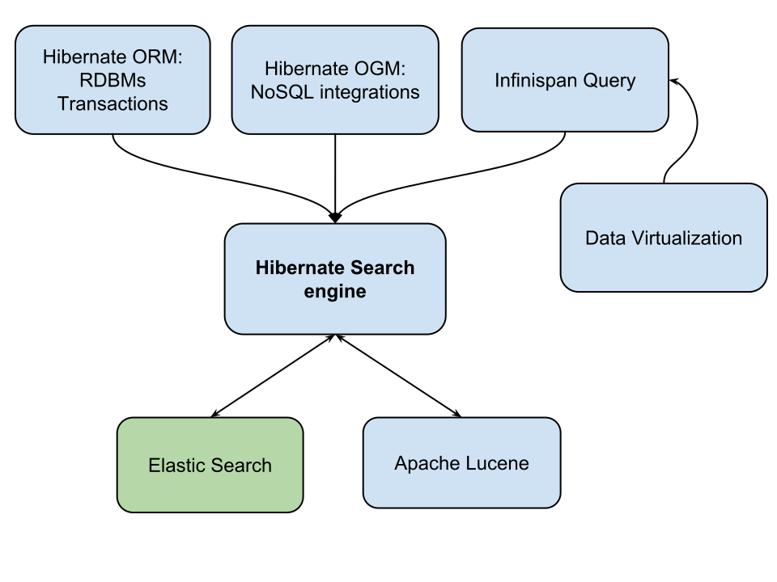

Hibernate & Elasticsearch
19 January 2016
Who is Sanne Grinovero?
Hibernate Team
Hibernate Search project lead
Hibernate ORM - performance improvements
Hibernate OGM - NoSQL R&D
contributing to Infinispan
the Lucene integrations: Infinispan Query, Infinispan Lucene Directory, cluster extensions for Hibernate Search
Some other projects I occasionally help with:
WildFly, JGroups, Apache Lucene, OpenJDK, Bean Validation,...
Who is Emmanuel Bernard?
Architect of the Data Platforms at Red Hat
Hibernate Search project founder
Leading all of Hibernate R&D
Agenda
- What's Hibernate Search again?
- Quick demo
- Overview of integrations and roadmap
- Wishes for the future
Hibernate Search Quickstart
org.hibernate
hibernate-search-orm
5.6.0.CR1
org.hibernate
hibernate-search-elasticsearch
5.6.0.CR1
Set basic configuration properties
hibernate.search.default.indexmanager elasticsearch
hibernate.search.default.elasticsearch.host http://127.0.0.1:9200
hibernate.search.default.elasticsearch.index_schema_management_strategy CREATE
Choose what and how to index
@Entity
public class Actor {
@Id
Integer id;
String name;
}
@Indexed @Entity
public class Actor {
@Id
Integer id;
String name;
}
@Indexed @Entity
public class Actor {
@Id
Integer id;
@Field
String name;
}
Relations
@Entity
public class Movie {
@Id
Integer id;
String title;
@ManyToMany
Set<Actor> actors = new HashSet<>();
}
@Indexed @Entity
public class Movie {
@Id
Integer id;
String title;
@ManyToMany
Set<Actor> actors = new HashSet<>();
}
@Indexed @Entity
public class Movie {
@Id
Integer id;
@Field
String title;
@ManyToMany
Set<Actor> actors = new HashSet<>();
}
@Indexed @Entity
public class Movie {
@Id
Integer id;
@Field
String title;
@ManyToMany @IndexedEmbedded
Set<Actor> actors = new HashSet<>();
}
Profit...
String[] productFields = { "title", "actors.name" };
org.apache.lucene.search.Query luceneQuery = // ...
FullTextEntityManager ftEm =
Search.getFullTextEntityManager( entityManager );
FullTextQuery query = // extends javax.persistence.Query
ftEm.createFullTextQuery( luceneQuery, Movie.class );
List movies = query.setMaxResults(10).getResultList();// Managed entities!
int totalNbrOfResults = query.getResultSize();
Demo!
Filters
List results = fullTextEntityManager
.createFullTextQuery( query, Product.class )
.enableFullTextFilter( "minorsFilter" )
.list();
List results = fullTextEntityManager
.createFullTextQuery( query, Product.class )
.enableFullTextFilter( "minorsFilter" )
.enableFullTextFilter( "specialDayOffers" )
.setParameter( "day", “20151029” )
.enableFullTextFilter( "inStockAt" )
.setParameter( "location", "San Francisco" )
.list();
Faceting

Spatial filtering

Beyond "Hibernate ORM" integrations!

Hibernate OGM
All the same as Hibernate ORM, but for NoSQL
- MongoDB
- Cassandra
- Neo4J
- CouchDB
- Ehcache
- Infinispan
- Redis
Might use better search too!
Hibernate Search & Infinispan Query
- Same underlying technology
- Same API to learn
- Same indexing configuration options
Booting Infinispan
<dependency> <groupId>org.infinispan</groupId> <artifactId>infinispan-embedded</artifactId> <version>8.2.5.Final</version> </dependency>EmbeddedCacheManager cacheManager = new DefaultCacheManager(); Cache<String,String> cache = cacheManager.getCache(); cache.put("key", "data goes here");
Same annotations, not an entity:
@Indexed
public class Country {
@Field(store = Store.YES)
@Analyzer(definition = "lowercaseKeyword")
private String name;
...
Store the Java POJO instances in the cache directly:
Country uk = ...
cache.put("UK", uk );
Query it!
QueryParser qp = new QueryParser("default", new StandardAnalyzer());
Query luceneQ = qp
.parse("+station.name:airport +year:2014 +month:12 +(avgTemp < 0)");
CacheQuery cq = Search.getSearchManager(cache)
.getQuery(luceneQ, DaySummary.class);
List<Object> results = query.list();
What's coming next?
Hibernate Search planning
- Release 5.6.0.Final in a few days
- Release 5.7 shortly after to catch up with Hibernate ORM
- Elasticsearch 5.0 ?
- Elasticsearch clients ?
- Properly "detach" from the Lucene API -> 6.0
- Prototype Apache Solr integration (6.1?)
Wishes on Elasticsearch:
Dry-run or “all or nothing” for schema updates
- Allow a single Batch?
- Transactional (handle client crash)?
- Semaphore to allow a single client to initiate admin ops?
Live incremental update of Analyzers
Be able to add new analyzer definitions w/o having to temporarily close the index
Allow faithful projections for all types
- We currently need to store the source document to make sure we can faithfully store e.g. a java.time.ZonedDateTime, as the "stored" field will always return them in UTC.
- The benefits of storing the source document are understood, still we don't want to force this requirement.
Improve backwards compatibility
- We can't ask users to update their client applications at the same time as they upgrade Elasticsearch: allow breaking the process down in smaller steps.
- We will try to work towards supporting multiple "dialects": detect the version of Elasticsearch and apply variations to the generated requests. (here be dragons?)
- Same for JVM versions: the client needs to be more conservative.
New Elasticsearch client: release and packaging process
- Same repository? Wondering if cross-checks of version compatibility will be pratical.
- Interest in packaging it as a WildFly Swarm Fraction? Happy to help, would be nice to have it released together with any new client release.
Digression: WildFly Swarm Fraction?
Aka "JBoss Module" packaging
- the project influenced Java 9's Jigsaw
- Heavily used within WildFly, WildFly Swarm.
- Very easy packaging: just explicitly list your dependencies in a file.
- Does not affect compiletime (unlike Jigsaw).
- We do re-package Apache Lucene & several others..
Thank you!
Some references:
- Hibernate team's blog in.relation.to
- Hibernate Search: hibernate.org/search
- WildFly: wildfly.org
- Infinispan: infinispan.org
- Export these slides to PDF(requires Chrome)
github.com/hibernate/hibernate-search
Our mailing list search, powered by Elasticsearch: http://search.jboss.org/